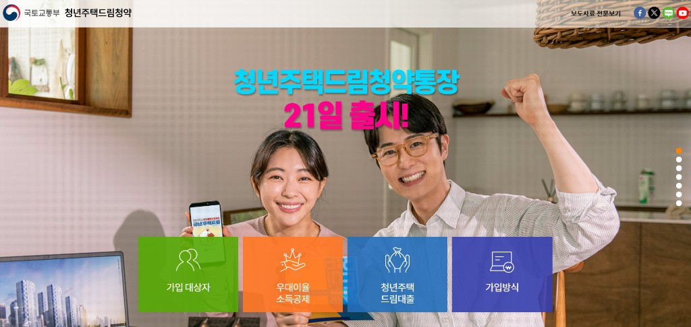
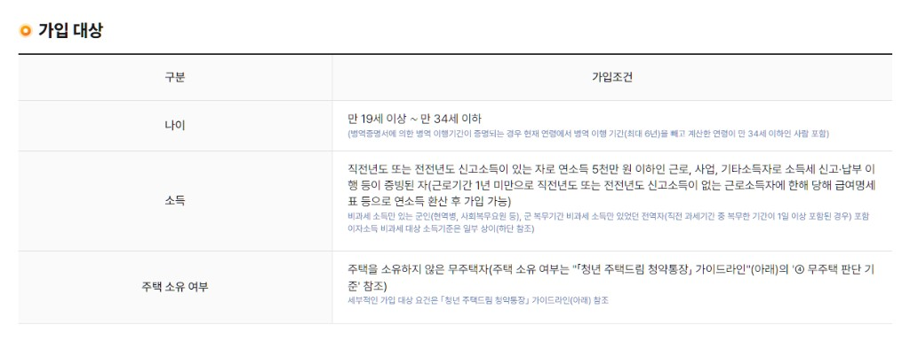

2026 청년 주택드림 청약통장 완벽 정리 (조건·금리·전환 방법)
저축 + 청약 + 저금리 대출까지 한 번에 챙기는 통장

월급쟁이 친구가 갑자기 "너 청년 주택드림 청약통장 했어?" 물어보더라고요. "그게 뭔데?" 했더니 "야, 너 진짜 모르냐? 금리 4.5%에 나중에 집 살 때 2.2%로 대출까지 해주는데?" 하는 거예요. 순간 등에 식은땀이 흐르더라고요. 30대 월급쟁이가 4.5% 금리 적금을 모르고 살았다니… 그래서 직접 알아본 내용, 같은 처지인 분들 위해 정리해봅니다.
🎯 청년 주택드림 청약통장이 뭔가요?
기존 청년우대형 청약저축을 업그레이드한 상품입니다. 한마디로 저축 + 청약 + 저금리 대출까지 한 번에 챙기는 통장이에요.
| 항목 | 내용 |
|---|---|
| 대상 | 만 19~34세 무주택자 |
| 소득 조건 | 연 5,000만원 이하 |
| 금리 | 최대 연 4.5% (가입 기간별 차등) |
| 월 납입한도 | 최대 100만원 |
| 비과세 혜택 | 이자소득 500만원까지 |
| 대출 연계 | 청년 주택드림 대출 (최저 2.2%) |
✅ 신청 조건 자세히

1. 나이
만 19세 ~ 만 34세입니다.
병역 이행자는 병역증명서로 입영·전역일을 증명하면, 병역 기간(최대 6년)을 현재 나이에서 차감한 뒤 34세 이하이면 가입할 수 있습니다.
2. 소득
- 직전 연도 또는 전전 연도에 소득 신고·납부 이력이 있는 근로·사업·기타소득자
- 연소득 5,000만원 이하 (기존 청년우대형 3,600만원 대비 한도 상향)
- 입사 1년 미만 등 소득 신고 이력이 없으면, 현재 급여명세서로 연환산 소득 산정 후 가입 가능
- 현역·사회복무요원 등 면세소득만 있는 경우, 전년도 복무 이력이 있으면 가입 대상에 포함
3. 무주택 요건
무주택자여야 합니다. 세대주뿐 아니라 무주택 세대원도 가입 가능합니다. (예전 청년우대형은 세대주만 됐던 것과 달라진 점이에요.) 세부 판단 기준은 국토교통부 안내의 무주택 판단 기준을 참고하세요.
4. 기타
가입 후 2년 이상 유지해야 우대금리가 적용됩니다.
💰 진짜 매력은 '대출 연계'
솔직히 금리 4.5%보다 대출 연계 혜택이 진짜라고 봐요.
청약 통장으로 가입한 후 청약에 당첨되면 청년 주택드림 대출을 받을 수 있는데, 조건이 꽤 강력합니다.
| 항목 | 내용 |
|---|---|
| 금리 | 최저 연 2.2% |
| 대상 주택 | 분양가 6억원, 전용 85㎡ 이하 |
| 한도 | 최고 3억원 (신혼 4억원) |
| LTV | 분양가의 80%까지 |
| 만기 | 최대 40년 |
요즘 시중 주담대 금리가 4~5%인데 2.2%면 거의 반값이죠. 신혼부부면 4억까지 받을 수 있고요.
🔄 기존 청약통장이 있다면? 전환 방법
이미 주택청약종합저축이 있는 분들도 전환 가능합니다.
전환 방법
- 가입 조건(나이·소득·무주택) 충족 확인
- 은행 방문 또는 모바일 앱(KB스타뱅킹, 신한 SOL 등) 접속
- '청년 주택드림 청약통장 전환' 메뉴 선택
- 소득확인증명서 제출
⚠️ 주의사항
- 기존 청약통장이 이미 당첨된 계좌라면 전환 불가
- 청년우대형 가입자는 자동 전환됨
- 소득 증빙은 작년 기준, 미확정 시 전전년도 자료 가능
💡 신청 전 꿀팁 3가지
- 월 납입은 최소 10만원부터 — 청약 가점에 유리
- 소득공제도 가능 — 연 240만원까지 40% 공제
- 자동이체로 빼먹지 말기 — 우대금리는 꾸준함이 핵심
🏠 마지막으로
청약 통장은 빨리 만들수록 유리해요. 가입 기간이 길수록 우대금리도 높고, 청약 가점도 올라가니까요. 만 34세까지만 가입 가능한 만큼 미루지 마시고 이번 주 안에 은행 들르세요.
내 연봉으로 청약 당첨됐을 때 실제로 어느 정도 집을 살 수 있는지 궁금하다면 아래 도구를 참고하세요.
본 글은 2026년 6월 기준 정보로, 정확한 조건은 국토교통부 청년주택드림 공식 사이트에서 최종 확인 바랍니다. 본 글은 일반 정보 제공 목적이며 투자·금융 상품 가입을 권유하지 않습니다.